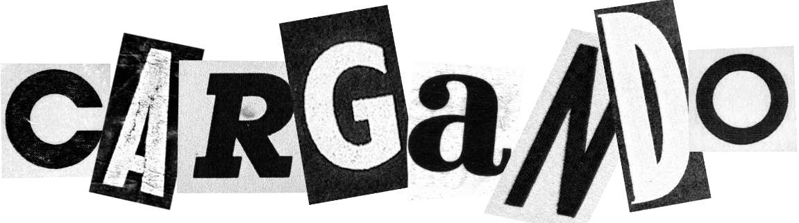
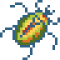
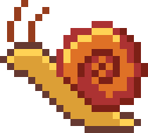
Aquí comparto una recopilación de mis proyectos pasados y actuales. Este espacio sirve como archivo de los trabajos que he ido realizando a lo largo de los últimos años.
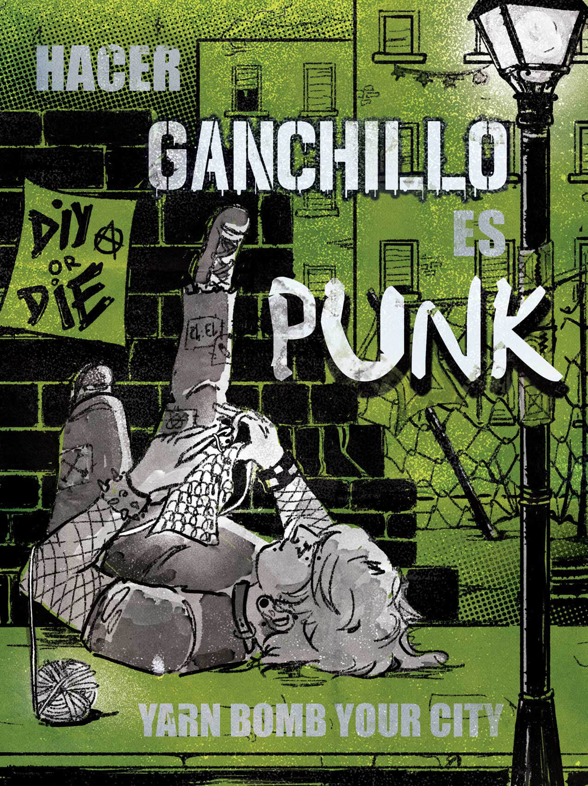
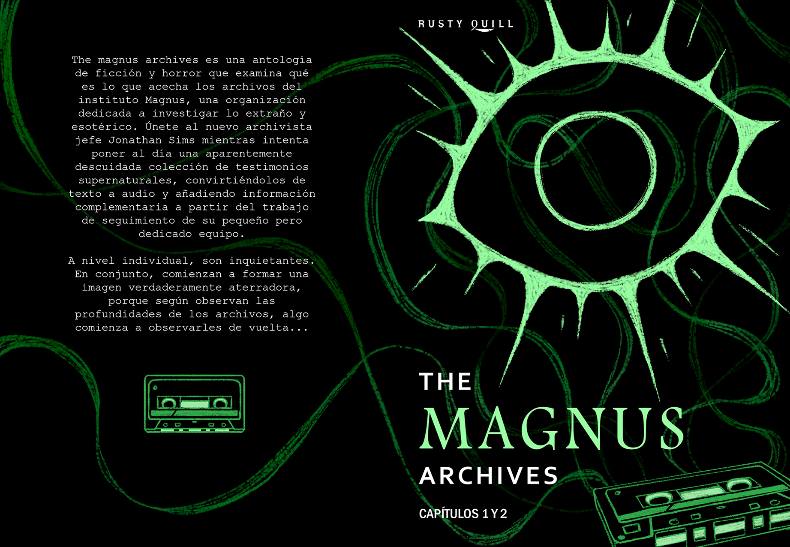
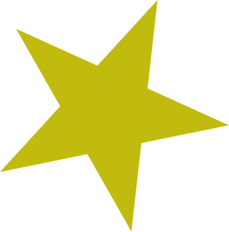
Ermes Olea
Madrid, España | sandrune.art
Porfolio 2025/2026
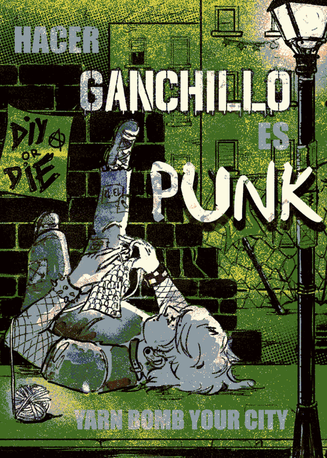
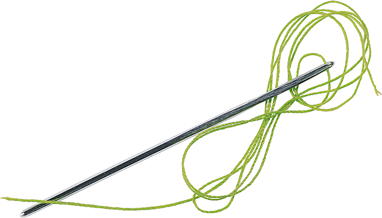
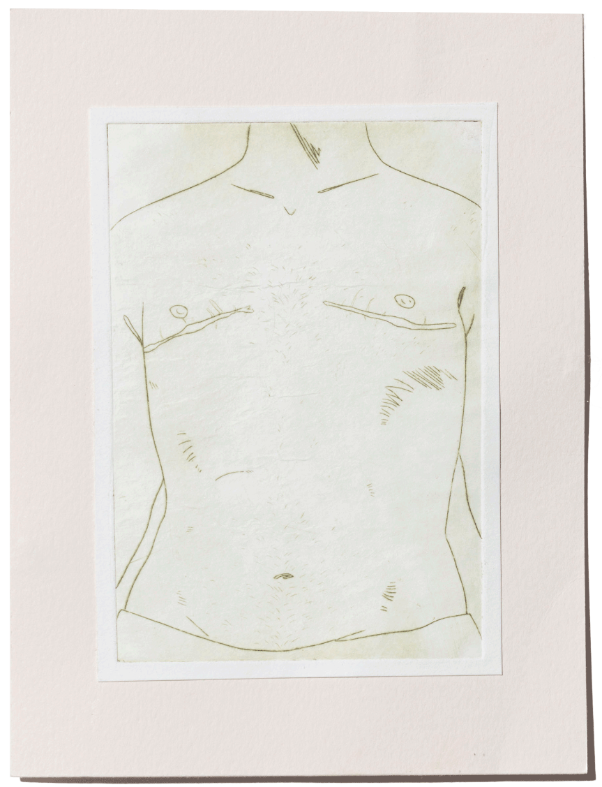
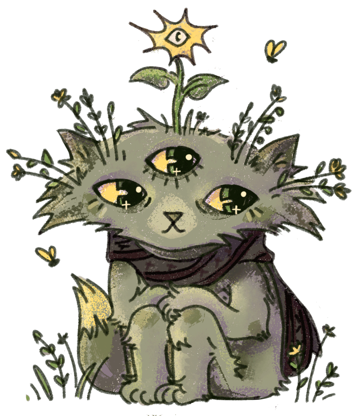
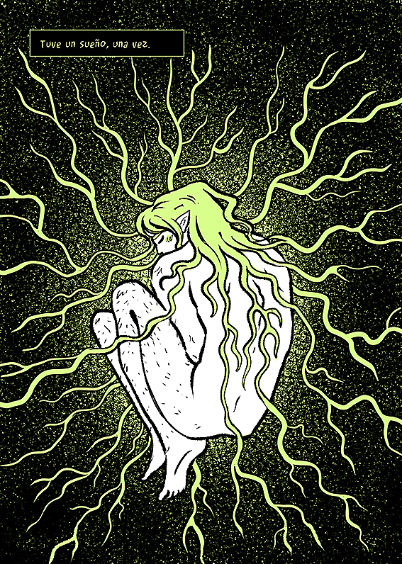
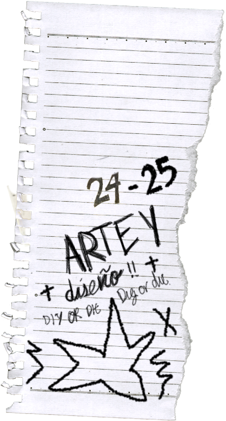
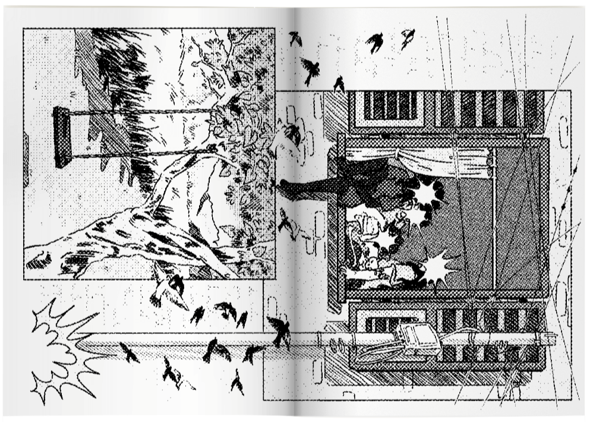
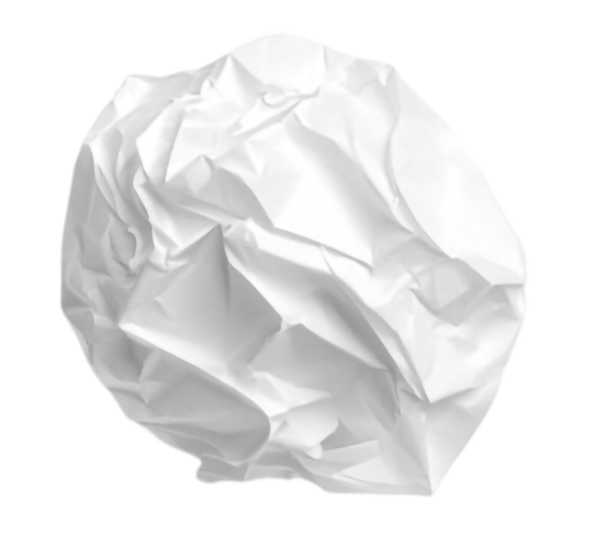
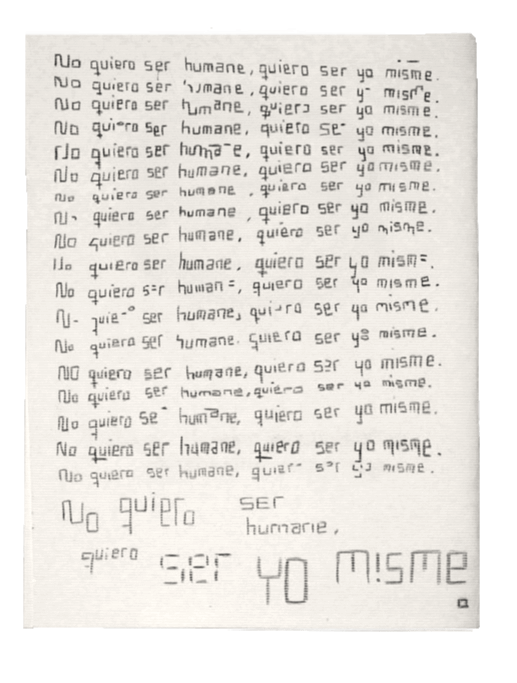